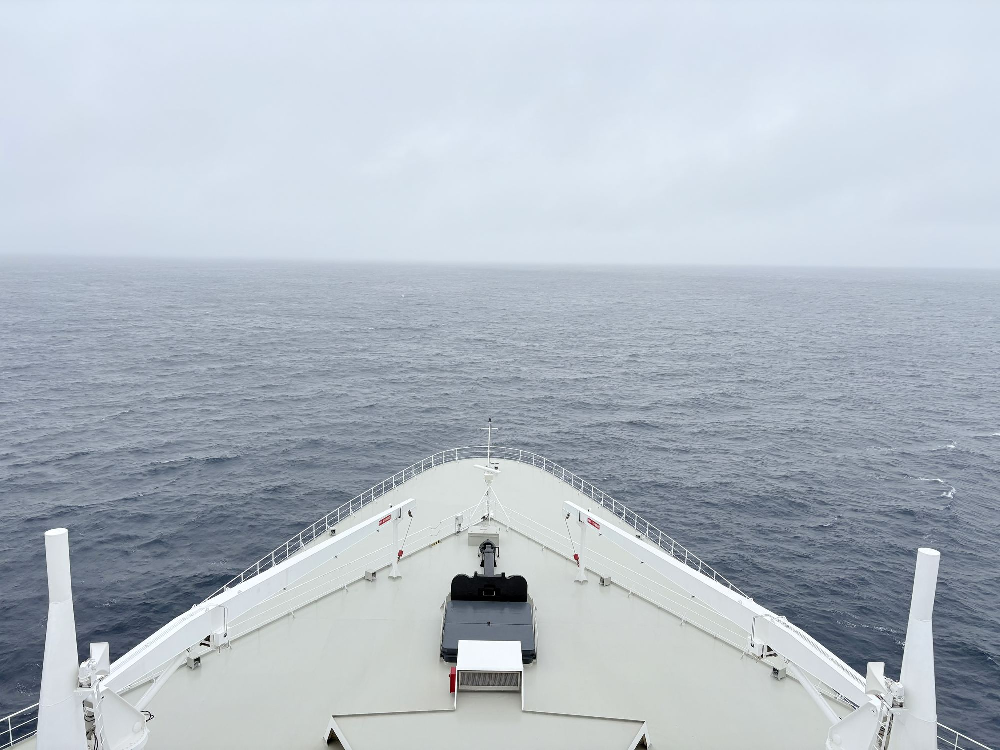
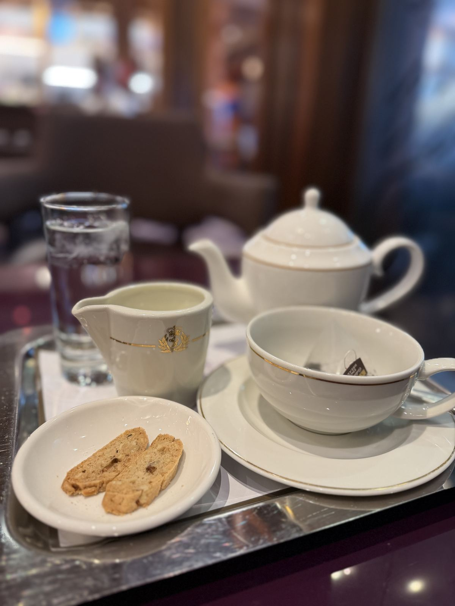

Queen Mary 2
Ocean Liner vs. Cruise Ship: What a Crossing Gives You That a Cruise Can't

People ask me why I'd spend a week getting to Europe when a plane takes a night. The honest answer is that the week is the point. The days at sea aren't the price of getting there. They're the trip.
A liner and a cruise ship aren't the same thing
It comes down to purpose. An ocean liner exists to carry people between two places, on a schedule, in whatever the ocean decides to do that week. She runs a timetable, the way airlines used to. A cruise ship is designed around the vacation itself: the itinerary, the ports, and the things to do on board between them.
That purpose shows in the steel. Queen Mary 2 has a deeper draft and a stronger, sharper hull than a typical cruise ship, because she was built for the North Atlantic in every season. She's the only ocean liner in regular service, running scheduled crossings between New York and Southampton, most of them seven nights.
Cruise ships cross the Atlantic too, usually when they move between seasons. On a liner, the crossing isn't a gap between ports. It's the whole point.
What a crossing day is like
On a crossing, the days stop asking things of you. There's no port talk, no shore excursion to catch, no deciding whether to get off the ship. The Atlantic is the destination until you arrive.
My days settle into a rhythm by about the second morning. A few laps of the promenade deck. Nobody needs anything from me before coffee. Lunch is often fish and chips at the Golden Lion, the ship's pub. The afternoon is for the library, a talk, or a nap I'm not ashamed of. Some evenings, dinner is room service and a window, and I've stopped feeling guilty about that.

I skip the gala nights. If dressing up for them brings you joy, good. You'll look great. Levi's and a sweater are more my speed, and the ship is big enough for both of us.
Is a crossing easier than flying?
It's slower, and that's exactly why it's easier. You board once, unpack once, and never sprint through a terminal. Going east, the ship sets the clocks forward an hour at midday on most days, so the time difference happens a little at a time instead of all at once in an airport. By Southampton, you're on British time and you've slept on it.
There's luggage, too. You can bring far more than an airline allows, which is why a crossing suits anyone heading to Europe for a long stay.
Who a crossing suits
People who'd rather arrive rested than arrive fast. People who find long airport days harder every year. Anyone for whom a week of sea days sounds like a luxury rather than a sentence. And anyone who has always wanted to do it once.
If you'd rather see a new port every morning, a cruise with more stops is the better trip, and I'd happily help you find a great one.
What to check before you book
- The sailing. Most crossings are seven nights, but dates and routes change, so confirm the current schedule.
- The edges of the trip. Book a night in New York or Southampton before you sail, and leave arrival day loose. Getting a ship this size unloaded takes the morning.
- The season. The North Atlantic is the North Atlantic. Fall and winter crossings can be lively, which is part of their charm if, like me, you like a grey sky.
Accessibility on board
Getting around with a wheelchair or scooter
Queen Mary 2 has wheelchair-accessible staterooms, and elevators connect the public decks. On a ship this long, the bigger question is distance. Some staterooms are a long walk from the elevators and the dining rooms, so that's the first thing I check.
Hearing, vision and other needs
Before booking, I ask the line the specific questions that matter to you, whether that's an orientation walk when you board, visual alerts in the cabin, or arrangements for a service animal, and you get the answers before you commit.
Ports at both ends
On the classic New York to Southampton crossing, the ship docks at both ends, so there are no tender boats to manage. You walk off the ship.
Rough days at sea
Queen Mary 2 handles the Atlantic well, but some days the deck moves. A cabin lower down and toward the middle of the ship moves the least.
Would I book this for a client?
Yes, for anyone who wants the journey to count as part of the trip. For me, it's the most civilized way left to reach Europe, and the only commute I've ever been sorry to see end.
If you've been thinking about a crossing, tell me about it.